Explore Athens
A Brief History
Athens has been inhabited for millennia, with the Acropolis bearing temples such as the Parthenon, built in the 5th century BCE under Pericles. The city served as a cultural center in antiquity and later under Roman, Byzantine, and Ottoman rule. It became the capital of independent Greece in 1834. Neoclassical quarters expanded in the 19th century. The Acropolis and its slopes are inscribed as a UNESCO World Heritage site.
Attractions Map
Top Sights & Activities

Acropolis of Athens
A rocky citadel above Athens holds the Parthenon, Erechtheion, Propylaea, and Temple of Athena Nike. Major construction under Pericles in the 5th century BC defined classical Greek architecture. Ongoing conservation addresses pollution damage and structural stress on the marble temples.

Parthenon
Dedicated to Athena Parthenos, this Doric temple on the Acropolis was completed around 438 BC under architects Ictinus and Callicrates. Phidias oversaw its sculptural program, including the lost gold-and-ivory statue of the goddess. Its colonnades and friezes remain a reference point for classical architecture.

Erechtheion
This Ionic temple on the Acropolis north slope honored Athena Polias and Poseidon-Erechtheus. Built between 421 and 406 BC, it incorporates several shrines on uneven ground. Six draped female figures, the Caryatids, support its south porch; five originals are displayed in the Acropolis Museum.

Greek Flag of Athens Acropolis
A flagpole near the Acropolis entrance flies the Greek flag in daily ceremonies performed by Evzones. On 30 May 1941, Manolis Glezos and Apostolos Santas climbed here at night and removed the Nazi swastika banner, an act of resistance remembered as a symbol of wartime defiance in occupied Athens.

Philopappos Hill
Also called the Hill of the Muses, this pine-covered rise southwest of the Acropolis holds the Philopappos Monument, a 2nd-century AD mausoleum for a Roman senator of Commagene. Footpaths lead to viewpoints over the Parthenon, Agora, and port of Piraeus.

National Archaeological Museum
Founded in 1829, Greece's national archaeological museum displays finds from excavations across the country, from Neolithic figurines to Roman bronzes. Highlights include Mycenaean gold masks, the Antikythera mechanism, and frescoes from Thera. The neoclassical building stands in the Exarchia district north of the center.

Arch of Hadrian
Hadrian dedicated this marble arch in 131–132 AD to mark the boundary between old Athens and his new quarter. Inscriptions on opposite sides address Theseus and Hadrian as founders. The structure stands east of the Temple of Olympian Zeus along a Roman processional route.

Zappeion
Funded by benefactor Evangelos Zappas, this neoclassical hall in the National Gardens was completed in the 1880s for exhibitions linked to the Olympic revival movement. It hosted fencing during the 1896 Games and continues to serve conferences and cultural events beside the parliament building.

Monastiraki Square
This busy square at the foot of the Acropolis takes its name from a former monastery church. Flea markets, souvenir stalls, and cafes fill the lanes around the Ottoman-era Tzistarakis Mosque and restored Hadrian's Library. Metro and suburban rail lines meet here, linking the center to the airport and port.

Panathenaic Stadium
Rebuilt in Pentelic marble on the site of an ancient racecourse, this horseshoe stadium hosted the 1896 Olympic opening and closing ceremonies. With a capacity near 45,000, it remains open for tours and occasional concerts. A bronze statue of Discobolus stands near the entrance on Ardettos Hill.

Daphni Monastery
This 11th-century monastery northwest of Athens replaced an earlier sanctuary of Apollo Daphnaios. Its compact cross-in-square church preserves mosaics from the Comnenian period with classical proportions and expressive figures. Earthquake damage led to lengthy conservation work on the dome and apse.
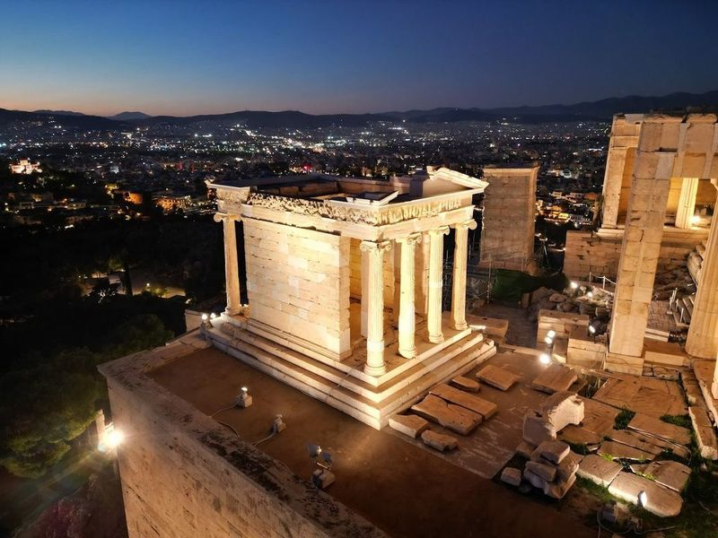
Temple of Athena Nike
The Temple of Athena Nike, located on the southwest corner of the Acropolis in Athens, is an ancient Ionic temple dedicated to the goddess Athena. Built between 432 and 421 BC to replace a previous temple destroyed by the Persians, it features four imposing monolithic columns and adorned marble slabs. This was a place where citizens would come to pray to the goddess Nike, a form of Athena associated with victory, particularly during times of war.
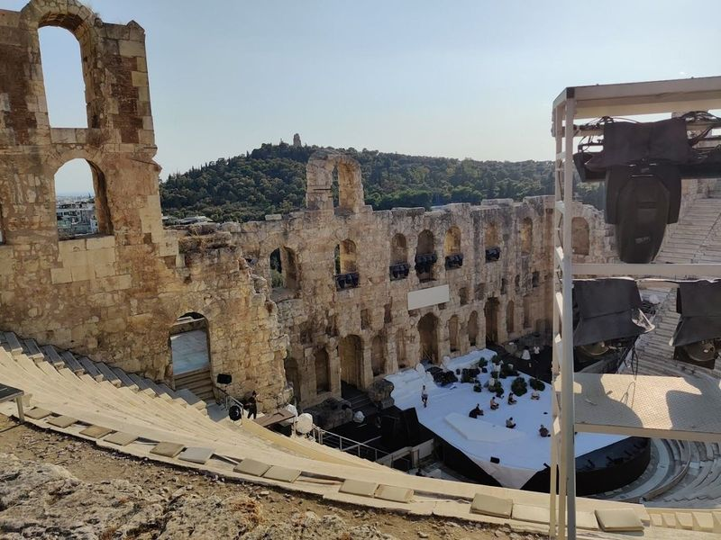
Odeon of Herodes Atticus
The Odeon of Herodes Atticus, a restored stone theater constructed in 161 CE, hosts concerts and performances. It is historically significant as the site of the first recorded victory in theatrical competitions by Thespis in 534 BC. Thespis, a renowned performer of ancient Greece, is credited with being the first actor to play his own character on stage rather than relying solely on the choir for storytelling.
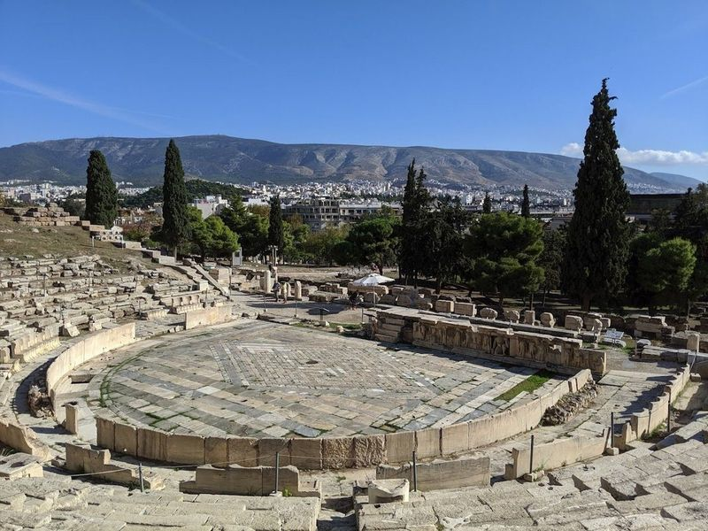
Theatre of Dionysus Eleuthereus
The Theatre of Dionysus, located just below the Acropolis complex on the eastern side, is an ancient amphitheatre dating back to the 6th century B.C. It was the largest theatre in Athens with a seating capacity of around 17,000 people. This historic venue witnessed significant events in theatrical history, including the first recorded victory of Thespis in 534 BC.
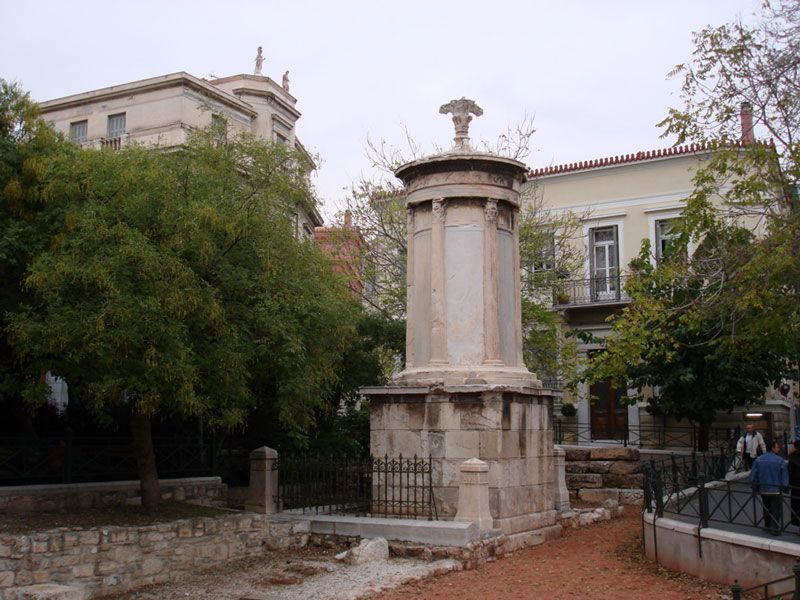
Choragic Monument of Lysicrates
The Choragic Monument of Lysicrates, also known as Diogenes' lantern, is an ancient circular stone building located in Athens. It stands on a pedestal in Lysicrates Square and was erected by Lysicrates around 335-334 BC to showcase the bronze tripod he received as a prize for sponsoring a winning play in dramatic competitions. This well-preserved monument is a testament to ancient sponsorship and can be found near shaded walkways and shops.
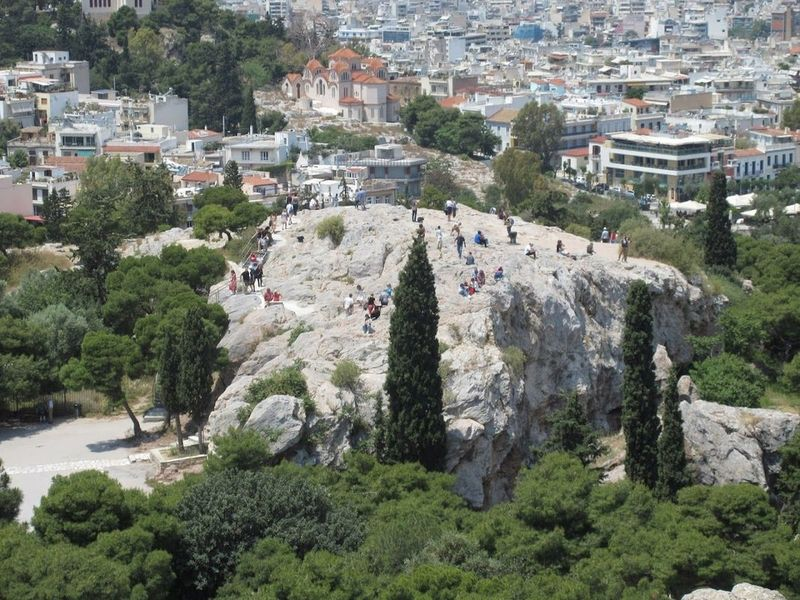
Areopagus Hill
Areopagus Hill, also known as Mars Hill, is a historic site in Athens that served as the high court of appeal for judicial cases in ancient Greece. It offers views of the Acropolis, Ancient Agora, and the Temple of Hephaestus. According to Greek mythology, it was where Ares stood trial for murder. Additionally, it's famous for being the place where Apostle Paul delivered a sermon and converted Dionysus to Christianity.
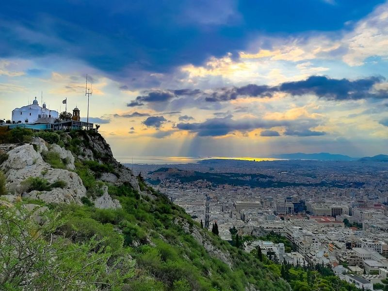
Lycabettus Hill
Lycabettus Hill is a popular destination in Athens, known for its panoramic views and as a prime spot to watch the beautiful sunset over the Greek capital. The hill features a wooded, steep-sloped park with a walkway leading to a lookout near a chapel, making it an ideal location for enjoying the sunset.
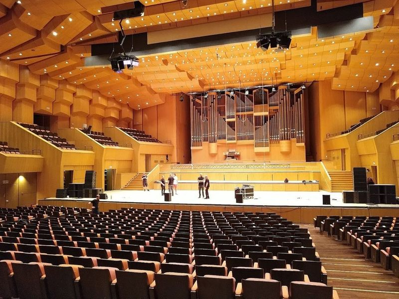
Athens Concert Hall
Athens Concert Hall is a large complex featuring four concert halls that host a diverse range of musical, dance, and theatrical performances. The venue includes spaces such as the Odeon of Herodes Atticus, Megaron Concert Hall, National Opera at the SNFCC, and Onassis Foundations Stegi. Additionally, it houses the National Theatre which has been showcasing ancient Greek tragedies and comedies since the 1880s.
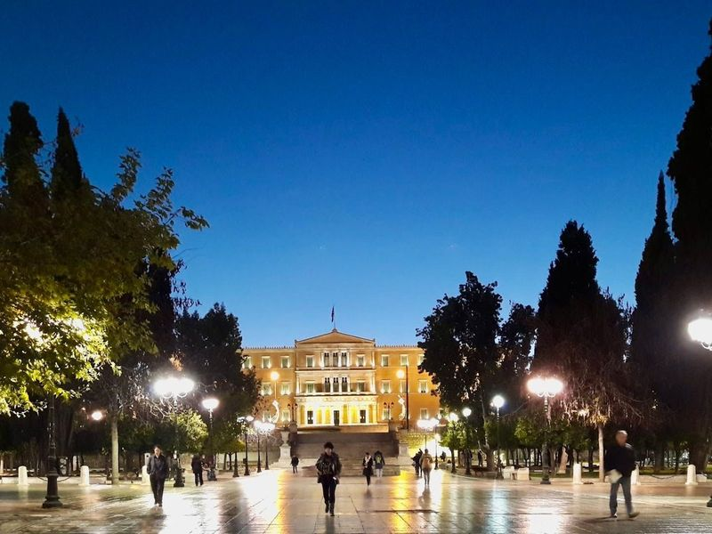
Syntagma Square
Syntagma Square is the vibrant heart of Athens, where history and culture converge in a lively atmosphere. This expansive, tree-lined square features charming cafes and park benches, making it an ideal spot to relax. Dominating the landscape is the Hellenic Parliament building, where travellers can marvel at the ceremonial Changing of the Guard performed by evzones in their striking traditional attire.
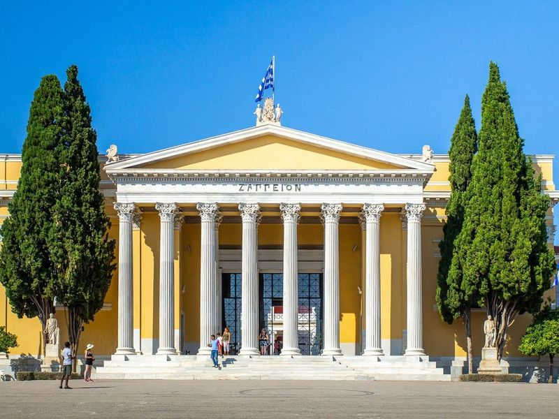
Monument to the Unknown Soldier
The Monument to the Unknown Soldier is a historic cenotaph in Athens, dedicated to Greek soldiers who lost their lives in wars. Situated across from Syntagma Square, it stands near the Old Royal Palace and is guarded by Evzones in traditional attire. The monument was built between 1930 and 1932 as a tribute to unidentified soldiers who fought for Greece's independence. It features a carved tomb with a soldier lying inside, symbolizing the sacrifices made during significant wars.
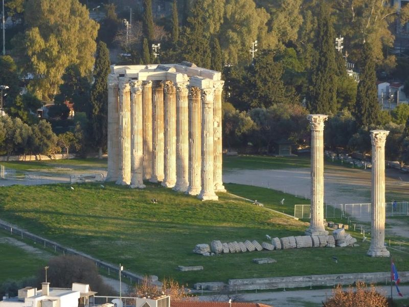
Temple of Olympian Zeus
The Temple of Olympian Zeus, a vast ancient temple dedicated to Zeus, was built in the 6th century B.C. on the site of an outdoor sanctuary. Located near the Acropolis, the area is surrounded by olive and pine trees, offering a serene environment with pathways and cobblestone streets for runners and joggers.
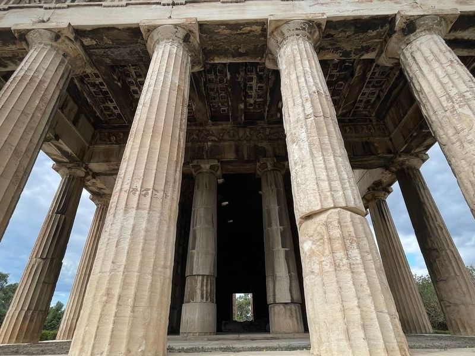
Temple of Hephaestus
The Temple of Hephaestus, an ancient Greek place of worship, stands as -preserved historical attractions in Athens. Built in the Doric style using marble with bas relief friezes, it is located at the Ancient Agora, a gathering place for Athenian citizens to discuss social and political issues. Situated near the Acropolis, this site holds great historical significance and was frequented by notable figures such as Sophocles and Protagoras.
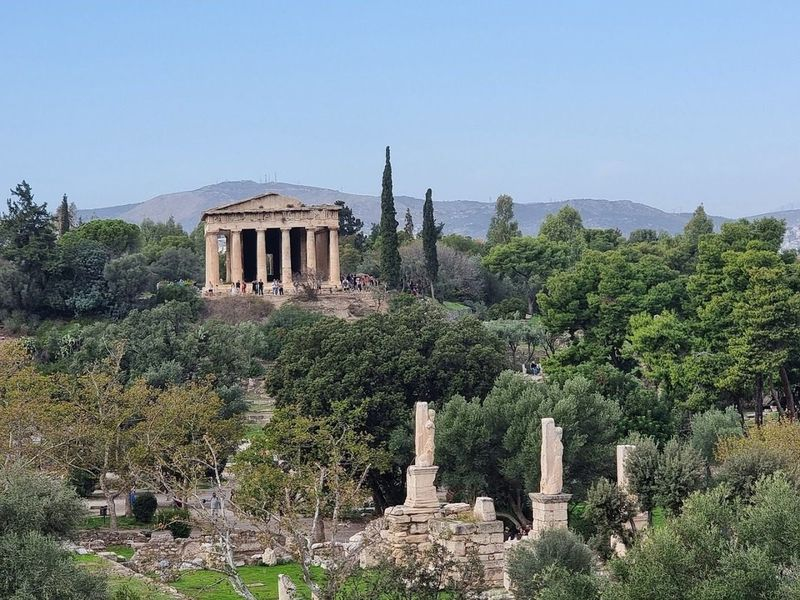
Ancient Agora of Athens
The Ancient Agora of Athens is a significant historical site located northwest of the Acropolis. It served as a meeting place for the city council and local residents, playing a pivotal role in the early days of democracy. The Stoa of Attalos, an impressive marble structure built in 159 BC, stands as a testament to its rich history. This large square was not only an administrative and political center but also a hub for cultural and commercial activities dating back to the 6th century BC.
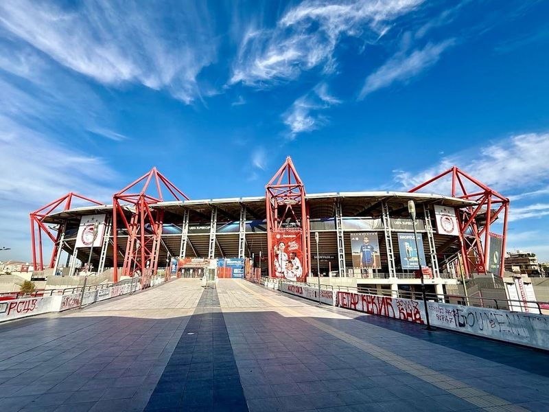
Georgios Karaiskakis Stadium
Georgios Karaiskakis Football Stadium, located in Piraeus, has a picturesque look that reflects the charm of old neighborhoods. The stadium is home to the Olympiakos friends club, offering travellers a glimpse into Piraeus' athletic history and the locals' unwavering devotion to their football team.
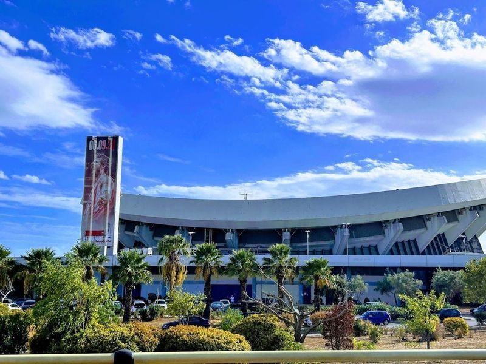
Peace and Friendship Stadium
The Peace and Friendship Stadium, also known as SEF (Stadio Eirinis kai Filias), is a well-known indoor sports arena in Piraeus, Greece. Since its opening in 1985, it has been the home court for Olympiacos Piraeus basketball games. The stadium hosts various sporting events, concerts, and cultural shows drawing large crowds from across Greece.
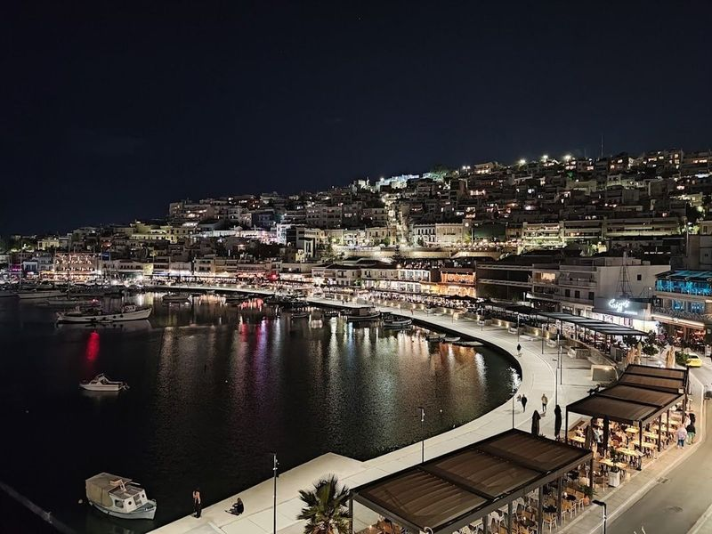
Mikrolimano
Mikrolimano, which translates to "small port," is a charming ancient harbor located in Piraeus. In ancient times, it served as Athens' main naval port and was dedicated to the goddess Artemis. The harbor is an almost perfect oval shape with vibrant homes overlooking it and filled with yachts. Today, Mikrolimano is lined with upscale restaurants, traditional fish taverns, and trendy cafes that make it a popular hotspot both day and night.
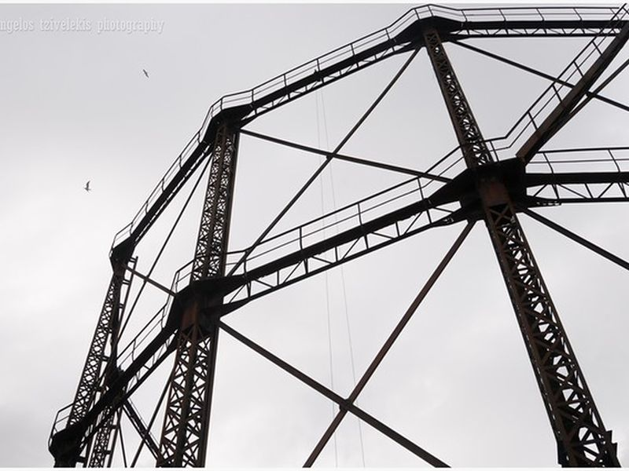
Technopolis City of Athens
A cultural venue and museum housed in an old gasworks factory, often hosting concerts, exhibitions, and other events. The site is catalogued as a tourist attraction. Technopolis City of Athens is listed among principal sites for Athens within Greece.
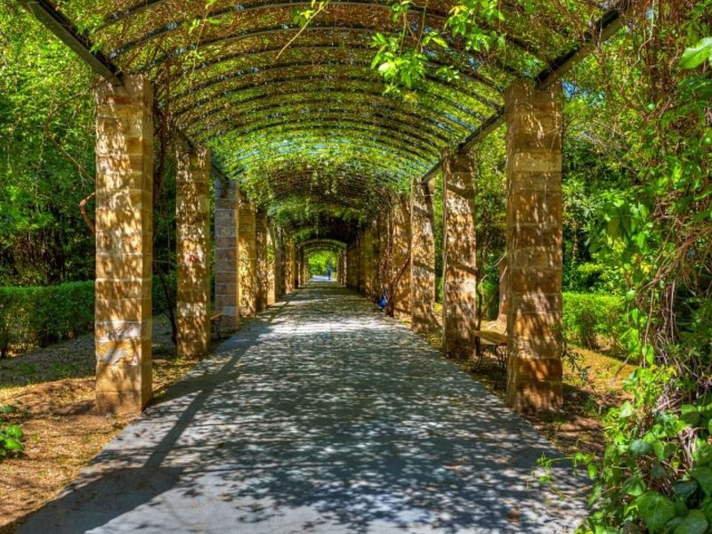
Athens National Garden
The Athens National Garden is a historic park featuring native and exotic plants, as well as archaeological remains and a children's library. Situated on the south coast of Attica, it offers a peaceful atmosphere with secluded romantic corners. The garden is just one of many sites in Athens, including the Acropolis, Mount Parnitha National Park, Diomidous Botanical Garden, Monastiraki Flea Market, and more.
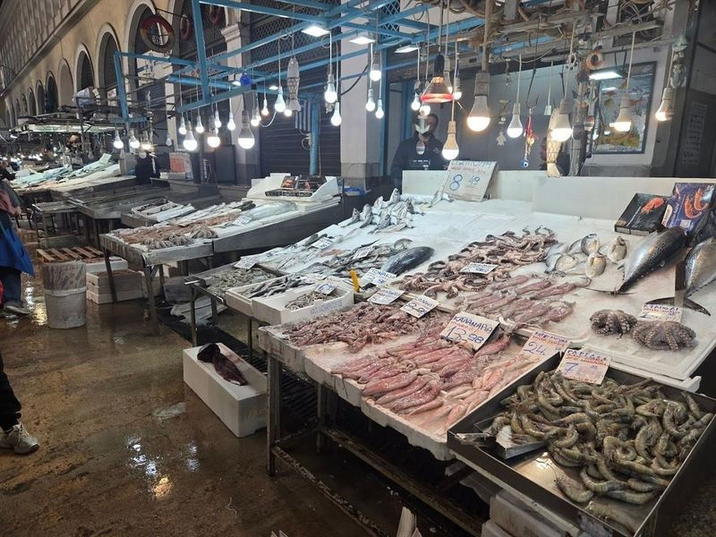
Varvakios Central Municipal Market
Varvakios Central Municipal Market in Athens is a bustling hub where locals shop for fresh fish, meat, and produce. The historic market is filled with the fragrant aroma of Greek ingredients and lively butchers vying for your attention. also find food stalls offering traditional Greek dishes like gyro, souvlaki, feta cheese, and Greek salad. Additionally, the market features restaurants serving authentic Greek mezethes at reasonable prices.
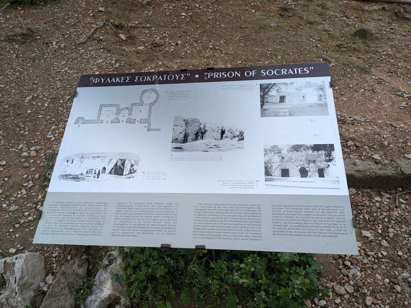
Prison of Socrates
Nestled beneath the scenic Hill of Philopappos, discover the intriguing site known as the Prison of Socrates. This historical location features two rock-carved caves that are believed to have once housed the great philosopher around 399 BC. Accused of corrupting youth and questioning traditional beliefs, Socrates faced dire consequences for his ideas. While some debate whether this was truly his prison, it remains a captivating spot filled with ancient charm and well-preserved passages.
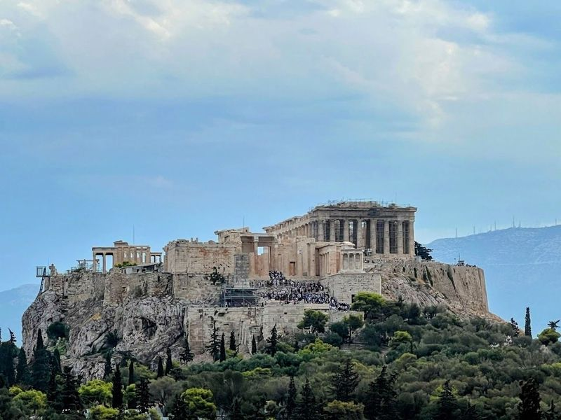
Pnyx Monument
Pnyx Monument offers panoramic views of Athens, including the Parthenon, Lycabettos, and the old center of Athens. It's a less touristy spot with archaeological significance as the birthplace of democracy. The area provides various walking routes to explore different neighborhoods of Athens and is also pet-friendly. travellers can enjoy sunsets over the sea and take in historical sites like Socrates' prison while appreciating the unique surroundings.
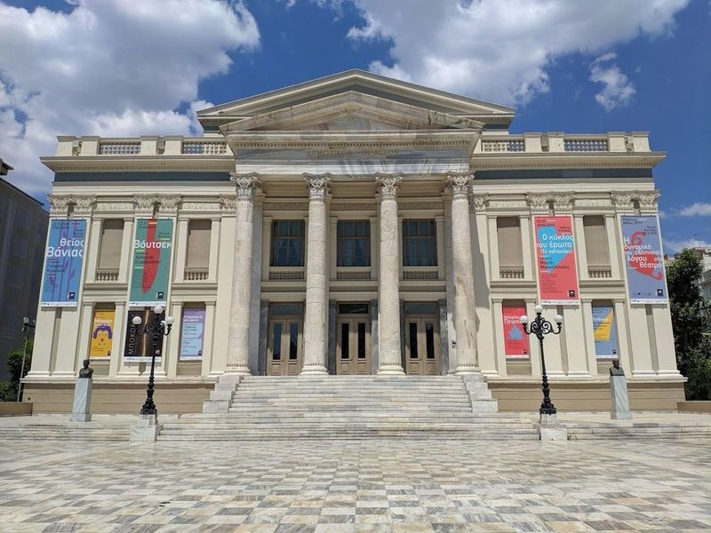
Municipal Theatre Of Piraeus
The Municipal Theatre of Piraeus is an elegant venue that can accommodate up to 60 people across its three-tiered galleries. It hosts both Greek and international drama and music performances, setting a high standard for Greek theaters. The sound quality during the shows is excellent, adding to the overall experience of watching a performance at this theater. However, there have been reports of poor customer service from the cashier who was found to be rude by some travellers.
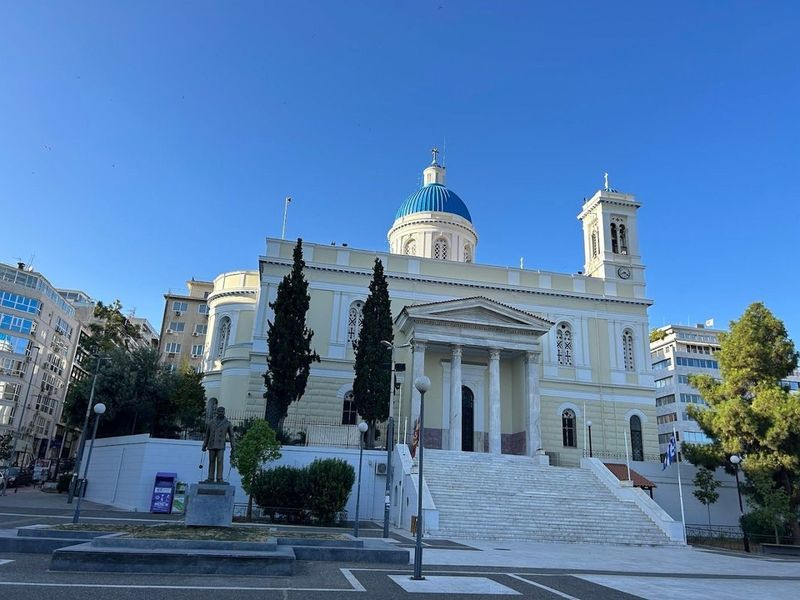
Church of Agios Nikolaos
The Church of Agios Nikolaos in Piraeus, Athens is a neoclassical Greek Orthodox church with a notable blue dome. The church's facade and entrance steps are impressive, inviting travellers to explore its interior. Inside, the frescoes and icons are splendidly decorated with beautiful paintings and ceiling art. This religious building is renowned for its Byzantine architecture that dates back to the 11th century, making it one of the oldest standing structures in Athens.
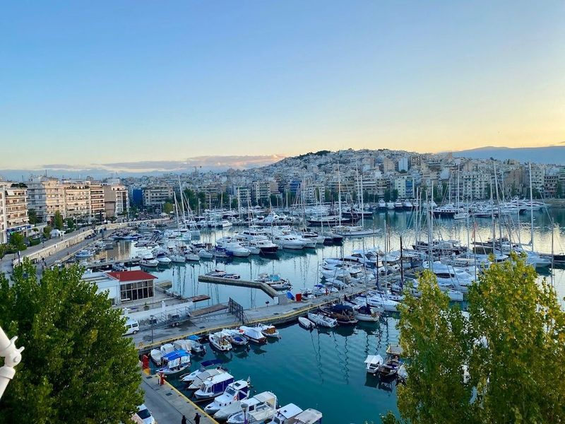
D-Marin Zea Marina
D-Marin Zea Marina, also known as Pasalimani, is a small harbor in Piraeus that offers a glimpse into the city's cosmopolitan side. The marina is home to impressive yachts and cruisers, creating a picturesque setting with its fishing boats and small ships. Along the coast, there are numerous restaurants, taverns, bars, and commercial stores catering to travellers' needs.
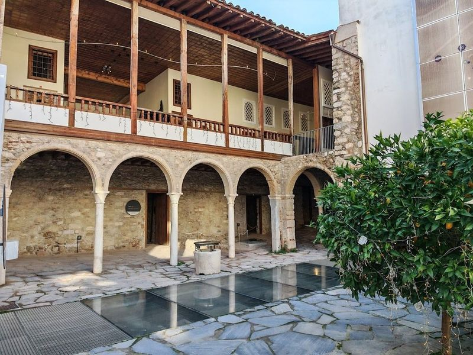
Benizelos Mansion
The Benizelos Mansion is an ancient, historic house in Athens that tells the story of the life and traditions of Athenian aristocrats before the Greek Revolution. It is also known for its great humanity and faith as it was once home to a family of staunch Christians.
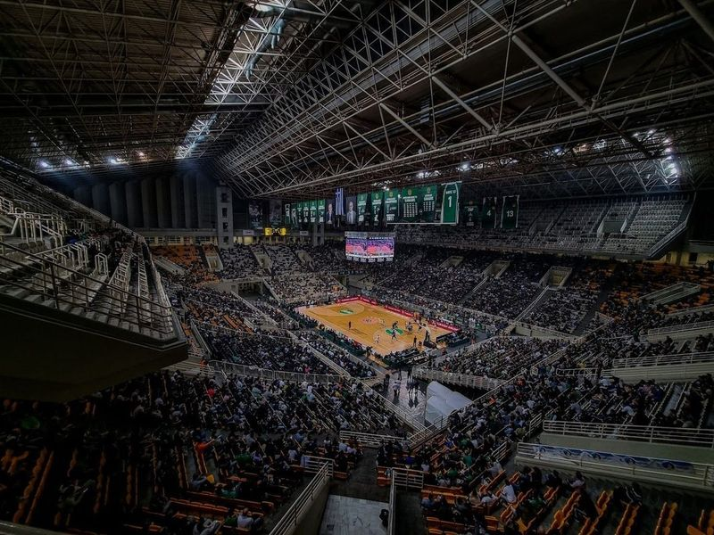
Athens Olympic Sports Center Spyros Louis
The Athens Olympic Sports Center Spyros Louis, also known as OAKA, is a futuristic complex designed by Santiago Calatrava for the 2004 Athens Olympics. It includes the Main Olympic Stadium and offers free access to its surrounding premises, featuring the Instagram-worthy Wall of Nations. While some areas like the Central Stadium and Cycling Track are closed for maintenance, travellers can still enjoy jogging and rollerblading in this largely unused but location.

Syggrou Grove
Syggrou Grove is a large and lush green park in Marousi, offering walking trails, picnic areas, and a peaceful escape from the city. It's perfect for nature walks and outdoor activities. The site is catalogued as a tourist attraction. Syggrou Grove is listed among principal sites for Athens within Greece.
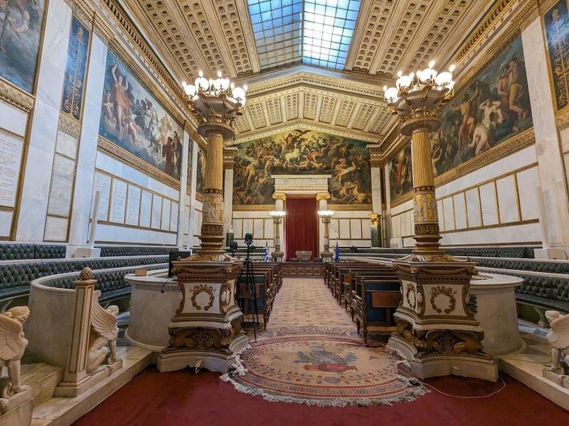
Academy of Athens
The Academy of Athens is a national institution housed in a neoclassical building from the 1800s. The Academia of Athens, inspired by the legendary academy of Plato, offers a blend of contemporary and classic design with an Ancient Greek aesthetic. The hotel provides carefully curated living spaces and features an in-house restaurant serving Mediterranean dishes made from local ingredients.
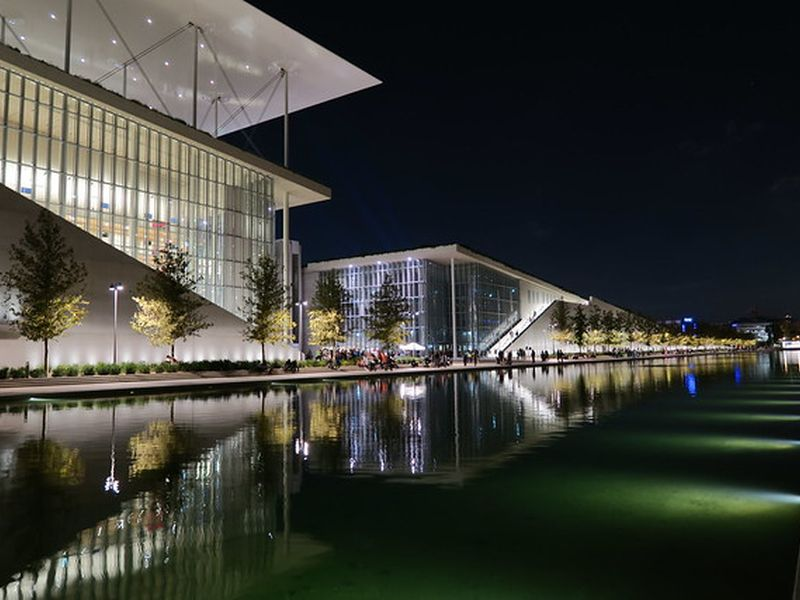
Stavros Niarchos Foundation Cultural Center (SNFCC)
The Stavros Niarchos Foundation Cultural Center is a sprawling, modern complex designed by Renzo Piano that houses the National Library of Greece and the Greek National Opera. The striking glass and concrete structure integrates cutting-edge sustainable architecture with expansive public spaces. Visitors can explore the grounds freely or take a guided tour to see the majestic interior halls and state-of-the-art facilities.
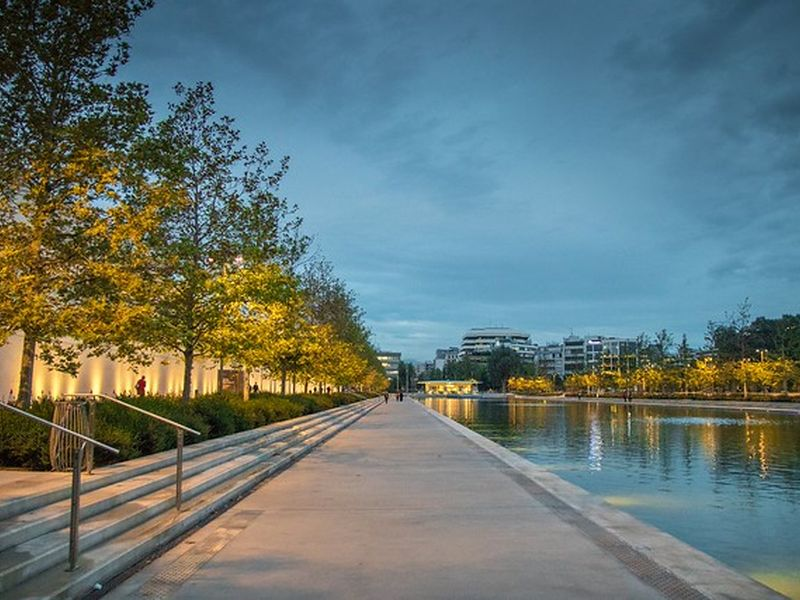
Stavros Niarchos Park
Stavros Niarchos Park surrounds the Cultural Center with expansive green spaces filled with Mediterranean flora, olive trees, and water features. The park slopes gently upward, eventually forming the green roof of the National Library and Opera building, offering remarkable views of the Athenian coast and the Acropolis. It serves as a vibrant outdoor venue for concerts, recreation, and community events.